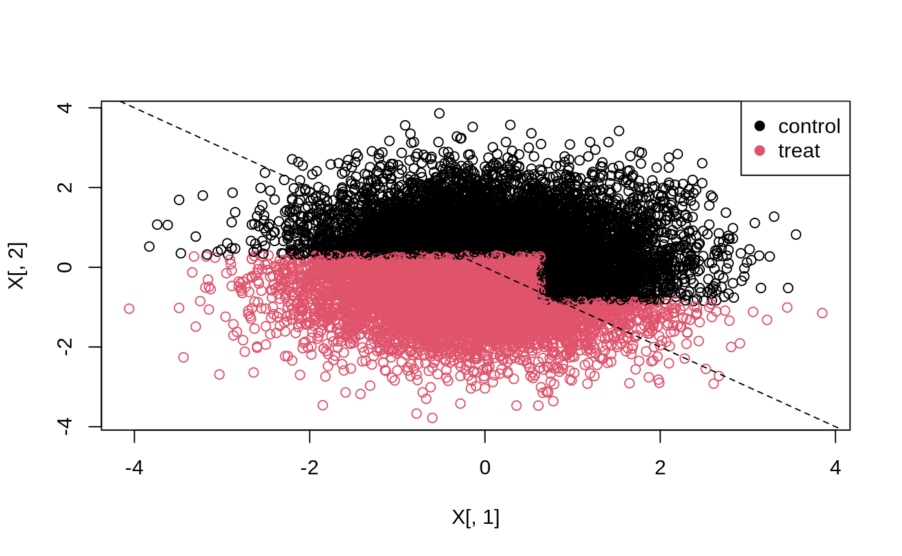

library(grf)
All GRF forest objects works with the tree extractor function get_tree which you can use to visually inspect trees with either print or plot. The example below demonstrates this for a regression forest.
n <- 100 p <- 5 X <- matrix(rnorm(n * p), n, p) Y <- X[, 1] * rnorm(n) r.forest <- regression_forest(X, Y, num.trees = 100) # Extract the first tree from the fitted forest. tree <- get_tree(r.forest, 1) # Print the first tree. print(tree) #> GRF tree object #> Number of training samples: 50 #> Variable splits: #> (1) split_variable: X.2 split_value: 1.84386 #> (2) split_variable: X.3 split_value: 0.0471544 #> (4) split_variable: X.1 split_value: 1.25381 #> (6) split_variable: X.2 split_value: -0.895363 #> (10) * num_samples: 3 avg_Y: 0.52 #> (11) split_variable: X.2 split_value: -0.849704 #> (14) * num_samples: 1 avg_Y: 0.32 #> (15) split_variable: X.5 split_value: -0.718466 #> (16) * num_samples: 1 avg_Y: 0.11 #> (17) * num_samples: 4 avg_Y: 0.22 #> (7) * num_samples: 2 avg_Y: -1.57 #> (5) split_variable: X.5 split_value: 0.659903 #> (8) split_variable: X.2 split_value: -0.741336 #> (12) * num_samples: 1 avg_Y: -1.91 #> (13) * num_samples: 9 avg_Y: 0.49 #> (9) * num_samples: 2 avg_Y: -0.2 #> (3) * num_samples: 2 avg_Y: -0.02 # Plot the first tree. plot(tree)
To find the leaf node a given sample falls into, you can use the get_leaf_node function.
n.test <- 4 X.test <- matrix(rnorm(n.test * p), n.test, p) print(X.test) #> [,1] [,2] [,3] [,4] [,5] #> [1,] 1.2127367 0.10594824 0.84944344 -1.74628449 0.2242183 #> [2,] 0.5771822 3.05712530 1.61090482 -0.75187304 -1.7156039 #> [3,] 2.2804284 0.01974265 0.05529995 0.07762225 0.5352278 #> [4,] -1.0041101 0.89149575 1.20539645 -0.59010514 -0.4925395 # Get a vector of node numbers for each sample. get_leaf_node(tree, X.test) #> [1] 13 3 13 13 # Get a list of samples per node. get_leaf_node(tree, X.test, node.id = FALSE) #> $`3` #> [1] 2 #> #> $`13` #> [1] 1 3 4
The above approach is only a convenient way to inspect individual trees, it is not suggested as a way to evaluate or design treatment assignment rules. For this purpose we suggest the companion package policytree (Athey and Wager, 2017). The example below illustrates this by fitting a shallow tree on doubly robust treatment effect estimates obtained from a causal forest. The function policy_tree and double_robust_scores belong to the policytree package.
library(policytree) # Fit a causal forest. n <- 15000 p <- 5 X <- round(matrix(rnorm(n * p), n, p), 2) W <- rbinom(n, 1, 1 / (1 + exp(X[, 3]))) tau <- 1 / (1 + exp((X[, 1] + X[, 2]) / 2)) - 0.5 Y <- X[, 3] + W * tau + rnorm(n) c.forest <- causal_forest(X, Y, W) # Compute doubly robust scores. dr.scores <- double_robust_scores(c.forest) # Fit a depth two tree on the doubly robust scores. tree <- policy_tree(X, dr.scores, 2) plot(tree)
# Predict treatment assignment. predicted <- predict(tree, X) plot(X[, 1], X[, 2], col = predicted) legend("topright", c("control", "treat"), col = c(1, 2), pch = 19) abline(0, -1, lty = 2)

For more details please see the referenced package, and the references therein.
Susan Athey and Stefan Wager. Efficient Policy Learning. 2017. [arxiv]
Sverdrup, Erik, Ayush Kanodia, Zhengyuan Zhou, Susan Athey, and Stefan Wager. policytree: Policy learning via doubly robust empirical welfare maximization over trees. Journal of Open Source Software 5, no. 50 (2020): 2232. [paper]